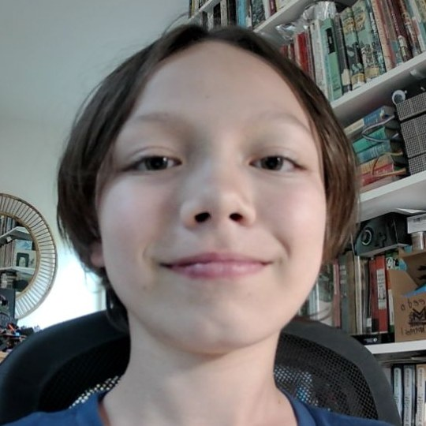

Same content in each, so you're judging the look and nothing else. The photo, the “hi, i'm callum”, a subtitle, and two project cards.
Tell me the number and I'll rebuild the whole site in it — every page, both light and dark where it makes sense. Mixing is fine too: “1 but with 3's type”.
One flat saturated colour, grain over the top, rounded geometric type (Nunito), everything centred, photo tilted a degree. Warm and personal. Reads young — which at 13 is honest, not a problem.

i build robots, games and tools
Translucent panels over a drifting colour wash. The most “designed” of the four and the most work per screen. Looks expensive; risks looking like every AI-made page if the grain and the restraint slip.
I build robots, games and tools.
Near-black, monospace throughout, one green. Left-aligned, no centring, no decoration. The least likely of the four to be mistaken for a template — and the least likely to be read as a kid's site. Harder to make warm.
i build robots, games and tools
Warm off-white, serif headings, photo set like a print. Quiet — it puts all the attention on your writing, which is the thing admissions readers actually score. Closest to “polished and professional”, furthest from the site you showed me.
I build robots, games and tools.